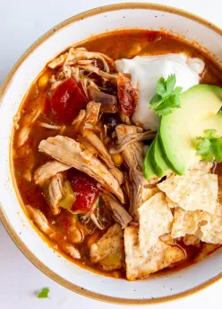

[Instant Pot] Chicken Tortilla Soup

Description
Delicious Chicken Tortilla Soup recipe optimized for ease of use with an Instant Pot.
Chicken Tortilla Soup was the first recipe I learned with my Instant Pot and is still one of my favorites.
Ingredients
- 2tsp Olive Oil
- 1 cup chpped onion
- 4 cloves garlic minced
- 4oz can mild fire roasted diced green chiles
- 14.5oz can fire raosted diced tomatoes
- 15oz red enchilada sauce
- 1-2tsp chili powder
- 1tsp cumin
- 15oz can black beans drained
- 4 cups low sodium chicken broth
- 1 pound boneless skinless chicken breast
- 1 cup canned corn
- salt and pepper to taste or 1/2tsp each
Instructions
- Add olive oil to Instant Pot insert and turn on saute function. Add the onion and cook, stirring, until softened, about 3 minutes. Turn off Instant Pot. Stir in the minced garlic.
- Add the diced green chiles, fire roasted diced tomatoes, enchilada sauce, chili powder, cumin, black beans and chicken broth. Stir well, scraping up any bits stuck to the bottom of the pot. Nestle the chicken into the liquid.
- Place the lid on and set it to the closed position. Move the steam valve to the sealing position.
- Set the Instant Pot to manual/pressure cook, high pressure, for 9 minutes. The Instant Pot will take about 20 minutes to reach pressure and then the cook time will start counting down. When the cook time is done, allow the pressure to release naturally for 10 minutes (this means just leave the Instant Pot alone for 10 minutes). Then, carefully move the steam valve to the venting position to release the remaining pressure. I usually do this with the handle of a long spoon.
- When the float valve drops down, the pressure has been released and it is safe to open your instant pot. Carefully remove the lid. Remove the chicken to a clean plate and let it rest for a few minutes.
- Stir the corn into the Instant Pot, cover and let it sit for 5 minutes. Meanwhile, shred the chicken.
- Return the shredded chicken back to the pot. Season soup to taste with salt and pepper. Serve with toppings as desired.
And there we have it Chicken Tortilla Soup